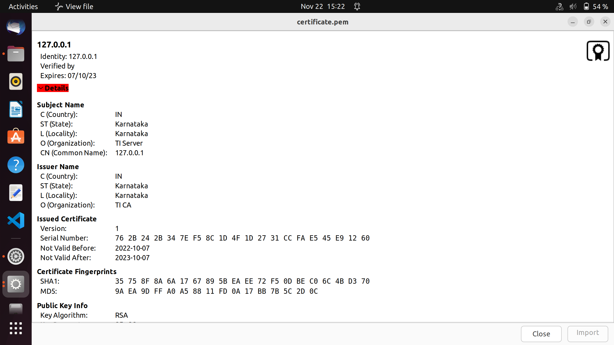
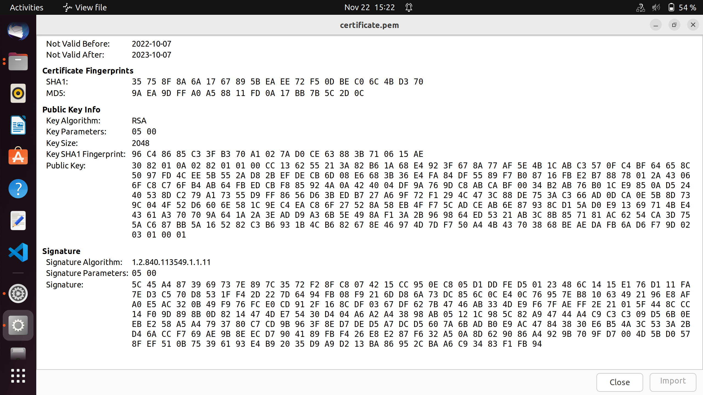
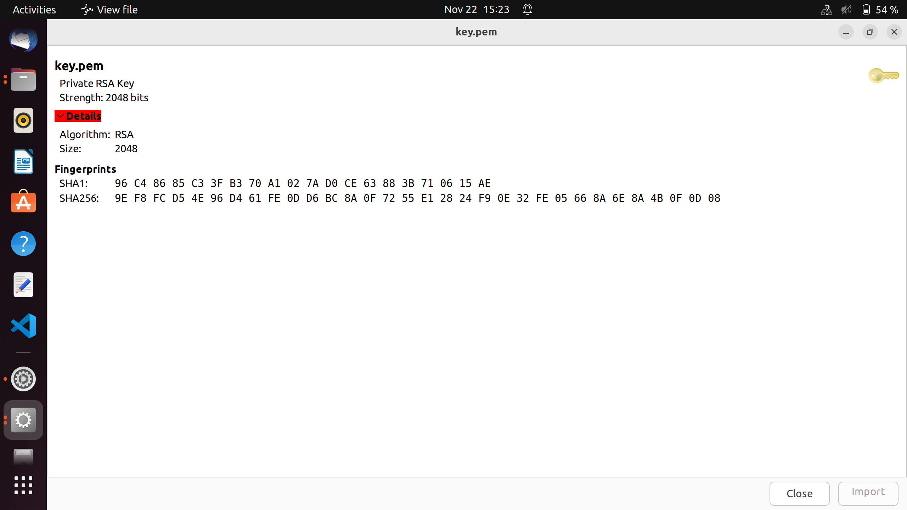
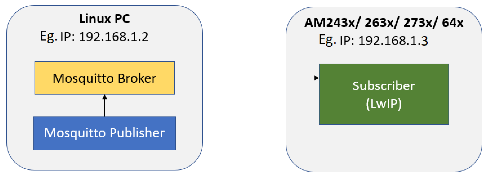
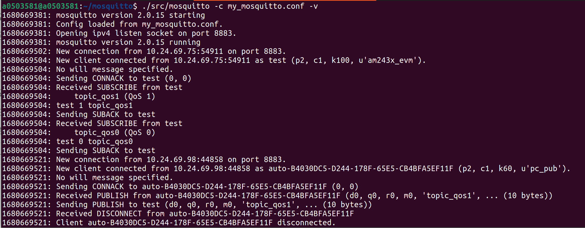
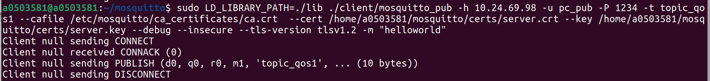

Introduction
- Note
- LwIP and MbedTLS features are made available as is from the public lwIP and MbedTLS project. SDK configuration may only enable and exercise a subset of these features. The mbedTLS public project being used here (tag 2.13.1) can be found here: https://github.com/Mbed-TLS/mbedtls/tree/mbedtls-2.13.1
This example demonstates how to run a MQTT client with TLS enabled on LwIP networking stack using raw API coupled with ethernet driver (ENET), with MbedTLS providing TLS functionality in the L4 layer.
On AM64X, we can do ethernet based communication using CPSW
- This is a standard ethernet switch + port HW
- It uses the ethernet driver underneath with LwIP TCP/IP networking stack
The example does below
- Initializes the ethernet driver for the underlying HW
- Initializes the LwIP stack for TCP/UDP IP.
- Client gets a static IP address and launches the MQTT client connection request.
- Based on the mode selected from app_main.c, the MQTT client acts as a subscriber or publisher
- MQTT broker waits for connection from client on port 1883 (TLS disabled) or port 8883 (TLS enabled).
- When the broker receives a connection request from the MQTT Client (AM2x device), a 2way Auth is completed and both the broker and client are verified by a TLS handshake
- After the handshake is complete, if publisher mode is selected, the client will publish the message entered by user in the console, else it will subscribe to the broker
- This showcases the ability of the TI device to act as an MQTT client and interact with an MQTT broker.
Supported Combinations
- Note
- In this example, we have used PBUF_RAM to allocate pbufs instead of PBUF_POOLS. This is subject to change in the future releases. The lwip-stack/src/apps/altcp_tls/altcp_tls_mbedtls.c file has also been moved to the example for the aforementioned reason.
-
To use MQTT without TLS, in "cpsw_lwip_mqtt/mqtt.h", set MQTT_HAVE_TLS to 0, and rebuild the example
Configuring Syscfg
- Following Syscfg option allows flexibility to configure memory foot print based on required use case like: Number of DMA descriptors and buffering.
- Supported Options with default configuration
| Feature | Section | Description | Remarks/Default Setting
|
| Mdio Manual Mode Enable | TI Networking / Enet (CPSW) | Flag to enable MDIO manual mode in example. Driver support for Manual mode is enabled, so this parameter configures manual mode in the example. | Default is true. If your silicon is affected with errata i2329— MDIO interface corruption, then TI suggests to use MDIO_MANUAL_MODE as software workaround.
|
| Disable Mac Port1, Disable Mac Port2 | TI Networking / Enet (CPSW) | Select which port to Disable | Default is Port1 enabled. If both Port1 and Port 2 are enabled, any port can be used and if operating in switch mode, it enables traffic switching between the two ports.
|
| Enable Packet Pool Allocation | TI Networking / Enet (CPSW) | Flag to enable packet allocation from enet utils library. It should be disabled to avoid utils memory wastage, in case application allots packet via other mechanism. (Ex- Lwip pools) | Default is true. It is disabled for lwip based examples. If enabled size of pkt pool size depends on 'Large Pool Packet Size', 'Large Pool Packet Count', 'Medium Pool Packet Size', 'Medium Pool Packet Count', 'Small Pool Packet Size' and 'Small Pool Packet Count'.
|
| Number of Tx Packet | TI Networking / Enet (CPSW) / DMA channel config | No of Tx packets required for DMA channel | Default is 16. It contributes to the size of Pkt Mem Pool, DMA ring buffer and accessories.
|
| Number of Rx Packet | TI Networking / Enet (CPSW) / DMA channel config | No of Rx packets required for DMA channel | Default is 40. It contributes to the size of Pkt Mem Pool, DMA ring buffer and accessories size. |
To Configure Static IP
Please refer to Ethernet LwIP TCP/IP Static IP.
mbedTLS
Mbed TLS is a C library that implements cryptographic primitives, X.509 certificate manipulation and the SSL/TLS and DTLS protocols. It is distributed under the Apache License version 2.0. Its small code footprint makes it suitable for embedded systems. It is known to be easy to understand, use, integrate and expand. The library is designed to integrate with existing (embedded) applications and to provide the building blocks for secure communication, cryptography and key management. It is designed to be as loosely coupled as possible, allowing you to only integrate the parts you need without having overhead from the rest.
TLS certificates
Here we use self signed openSSL generated certificates for TLS handshake. The steps for generation of certificate are shown below. The mosquitto broker accepts certificates in PEM (.crt extension) format. The format for client certificates used in the SDK code is DER format in the form of binary data.
The certificates needed here are:
- Server certificates
- CA certificartes
The client certificates can be shared across multiple clients. For simplicity we use "1234" as passwords for all the certificates and broker configuration.
- Note
- In this implementation of MQTT client, we have not enabled the file system support. We directly use the certificate's and key's data in binary form. The client_info.h file has both the Certificate, the private key, the CA details and the password. The variables are required by mqtt.c to perform a 2way authentication.
Generate Certificates
- Create Key pair for Certificate authority (CA).
$ oopenssl genrsa -des3 -out ca.key 2048
- Generate certificate for CA using above key
$ openssl req -new -x509 -days 1826 -key ca.key -out ca.crt
- Create server key pair for the server, to be used by the broker
$ openssl genrsa -out server.key 2048
- Create a Certificate Sign Request (csr) for the server
$ openssl req -new -out server.csr -key server.key
- Self sign the Server certificates using CA key
$ openssl x509 -req -in server.csr -CA ca.crt -CAkey ca.key -CAcreateserial -out server.crt -days 360
- To convert certificates from PEM to DER format. Convert both CA and server certificates
$ openssl x509 -outform der -in ca.pem -out ca.crt
$ openssl rsa -outform der -in ca.key -out ca.key
- To convert DER certificates to binary data, this data is used in client_info.h
xxd -i filename.der filename.h
- Note
- In case of linux, "/etc/mosquitto/ca_certificates" is the directory where the CA keys and certificates should be placed. The server certificates should be placed in mosquitto/certs folder.
Sample generated certificate


Sample generated key

Mosquitto Broker Configurations
- Install Mosquitto broker and clients
sudo apt-get install mosquitto
sudo apt-get install mosquitto-clients
- Create a Password file with users, for simplicity, we use "1234" as password for all 3 users
./apps/mosquitto_passwd/mosquitto_passwd -c my_password_file am243x_evm (or any other username)
./apps/mosquitto_passwd/mosquitto_passwd my_password_file pc_sub
./apps/mosquitto_passwd/mosquitto_passwd my_password_file pc_pub
- Create your own copy of the ACL file, add all users created above
cp aclfile.example my_aclfile
# Sitara Device client
user am243x_evm (or any other username)
topic topic_qos1
# Linux PC - Subscriber
user pc_sub
topic topic_qos1
# Linux PC - Publisher
user pc_pub
topic topic_qos1
- Create your own copy of mosquitto.conf
cp mosquitto.conf my_mosquitto.conf
- Make the following changes according to the diff shown below
a0503581@a0503581:~/mosquitto$ diff mosquitto.conf my_mosquitto.conf
37c37
< #per_listener_settings false
---
> per_listener_settings true
234c234
< #listener
---
> listener 8883 10.24.69.98
257c257
< #bind_interface
---
> bind_interface enp0s31f6
312d311
< # enabled for any listener.
318c317
< #certfile
---
> certfile /home/a0503581/mosquitto/certs/server.crt
321c320,322
< #keyfile
---
> keyfile /home/a0503581/mosquitto/certs/server.key
>
> tls_version tlsv1.2
352c353
< #require_certificate false
---
> require_certificate true
362,364c363,364
< #cafile
< #capath
<
---
> cafile /etc/mosquitto/ca_certificates/ca.crt
> #capath /home/a0503581/mosquitto/certs
532c532
< #allow_anonymous false
---
> allow_anonymous true
550c550
< #password_file
---
> password_file my_password_file
613c613
< #acl_file
---
> acl_file my_aclfile
- Note
- To run the same example without TLS, the mosquitto.conf file should use port 1883 instead of 8883 and "require_certificates" should be set to false, the capath, certfile path should be removed
Steps to Run the Example
Build the example
- When using CCS projects to build, import the CCS project for the required combination and build it using the CCS project menu (see Using SDK with CCS Projects).
- When using makefiles to build, note the required combination and build using make command (see Using SDK with Makefiles)
HW Setup
- Note
- Make sure you have setup the EVM with cable connections as shown here, EVM Setup. In addition do below steps.
Create a network between EVM and host PC
- The EVM will get an IP address statically (192.168.1.3), so make sure to connect the other end of the cable to a linux PC (192.168.1.2) running the mosquitto broker.

Local network between PC and EVM
- To check the router connection with host PC, recommend to disconnect all other networking conenctions on the PC, sometimes you may need to disable firewall SW, and make sure the IP address of the linux PC is correct.
Steps to execute
- On a linux terminal, launch the broker using the command: "./src/mosquitto -c my_mosquitto.conf -v"
- Run the example on the TI Sitara device (AM64X).
- Try to reach the EVM using ping as shown below, using a command shell on the host PC
- The client (192.168.1.3) will attempt to make a connection with the broker (192.168.1.2) and after the TLS handshake is complete, the broker logs will display a message for new connection
- In another linux terminal, use the command to publish data to a topic which the client has subscribed to:
sudo LD_LIBRARY_PATH=./lib ./client/mosquitto_pub -h 192.168.1.2 -u pc_pub -P 1234 -t topic_qos1 --cafile /etc/mosquitto/ca_certificates/ca.crt --cert {PATH_TO_BROKER}/mosquitto/certs/server.crt --key {PATH_TO_BROKER}/mosquitto/certs/server.key --debug --insecure --tls-version tlsv1.2 -m "helloworld"
- The broker and client output has been displayed above.
- There will be constant PING messages shared between client and broker to keep the connection alive.
- Note
- For MQTT without TLS, use the conf file created for Non TLS broker, Steps 1-3 remain same, for publishing data, use the following command: LD_LIBRARY_PATH=./lib ./client/mosquitto_pub -h BROKER_IP -u pc_pub -P 1234 -t topic_qos1 -m 'helloworld'
Sample output for MQTT example
- Sample terminal output (TI device) The subscriber connection (named "test" here) received a message on topic (topic_qos1) of lenght 10 ("helloworld")
==========================
CPSW LWIP MQTT + TLS
==========================
Enabling clocks!
Mdio_open: MDIO Manual_Mode enabled
EnetPhy_bindDriver: PHY 0: OUI:080028 Model:23 Ver:01 <-> 'dp83867' : OK
PHY 0 is alive
Starting lwIP, local interface IP is Statically assigned
Host MAC address-0 : ac:1f:0f:84:0c:70
[LWIPIF_LWIP] NETIF INIT SUCCESS
Enet IF UP Event. Local interface IP:192.168.1.3
[LWIPIF_LWIP] Enet has been started successfully
Waiting for network UP ...
Waiting for network UP ...
Waiting for network UP ...
Cpsw_handleLinkUp: Port 1: Link up: 1-Gbps Full-Duplex
MAC Port 1: link up
Network Link UP Event
Network is UP ...
MQTT Client connection accepted
MQTT Client "test" connection accepted
MQTT Client "test" connection accepted
12. 87s : CPU load = 11.65 %
MQTT client "test" subscribed to topic: topic_qos1
MQTT client "test" data received: helloworld, data len: 10 bytes
17. 88s : CPU load = 2.38 %
- Sample output of broker (Linux terminal)

Mosquitto broker output
- Sample output of publish command (Linux terminal)

Client output in terminal
Troubleshooting issues
- If you see MAC address as
00:00:00:00:00:00, likely you are using a very early Si sample which does not have MAC address "fused" in, in this case do below steps
- Open file
source/networking/.meta/enet_cpsw/templates/am64x_am243x/enet_soc_cfg.c.xdt
- Uncomment below line
#define ENET_MAC_ADDR_HACK (TRUE)
- Rebuild the libraries and examples (Using SDK with Makefiles)
- If you see a valid, non-zero MAC address and continuosly seieing "Waiting for network UP..." prints in UART terminal
- Make sure you see
Enet IF UP Event. message, if not check the ethernet cable
- If the TLS handshake fails:
- Make sure the client_info.h file has valid certificates for client and CA and valid password.
- For LwIP related error codes, refer:
- For MQTT Error codes, refer the file at path:
- /lwip/lwip-stack/src/include/lwip/apps/mqtt.h
- To check the broker configuration, a mosquitto subscriber and publisher can be used on the linux PC
- To launch the broker
./src/mosquitto -c my_mosquitto.conf -v
- To subscribe using mosquitto subscriber
sudo LD_LIBRARY_PATH=./lib ./client/mosquitto_sub -h 192.168.1.2 -u pc_sub -P 1234 -t topic_qos1 --cafile /etc/mosquitto/ca_certificates/ca.crt --cert /home/a0503581/mosquitto/certs/server.crt --key /home/a0503581/mosquitto/certs/server.key --debug --insecure --tls-version tlsv1.2
- To publish using mosquitto publisher
sudo LD_LIBRARY_PATH=./lib ./client/mosquitto_pub -h 192.168.1.2 -u pc_pub -P 1234 -t topic_qos1 --cafile /etc/mosquitto/ca_certificates/ca.crt --cert /home/a0503581/mosquitto/certs/server.crt --key /home/ a0503581/mosquitto/certs/server.key --debug --insecure --tls-version tlsv1.2 -m "helloworld"
See Also
Ethernet And Networking
 1.8.20
1.8.20